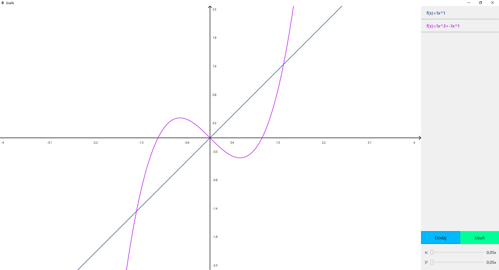

Instrukcja
Program "Grafik" służy do szkicowania funkcji wielomianowych jednej zmiennej na ekranie komputera. Oto jego podstawowe funkcje:
Dodawanie fukcji
- Mając otwarty ekran główny aplikacji naciśnij przycisk "Dodaj"
-
W oknie dodawania należy wpisać wzór danej fukcji:
- Jeżeli Twoja funkcja składa się z jednego wyrażenia, np. 5x², w polu do wpisywania cyfr po lewej stronie na dole wpisz "5" (można wpisywać tylko liczby rzeczywiste), w polu po prawej stronie nad znakiem "x" wpisz "2" (można wpisywać tylko liczby naturalne), a następnie naciśnij przycisk "+"
- Wyrażenia takie jak x to cyfry "1" i "1" odpowienio w prawym i lewym poku, a wyrazy wolne, np. 5 to odpowiednio "0" i "5" w danych polach
- Jeżeli Twoja funkcja składa się z sumy takich wyrażeń, dodaj pierwsze wyrażenie w opisany w pierwszym podpunkcie sposób, a następnie powtórz daną procedurę z każdym kolejnym elementem sumy
- Naciśnij przycisk "Gotowe"
- Program automatycznie uporządkuje daną funkcję, wylosuje kolor wykresu nowej funkcji, doda ją do listy z prawej strony oraz wyświetli wykres w układzie współrzędnych

Usuwanie fukcji
- Zaznacz kliknięciem myszą na liście po prawej stronie wzór funkcji, którą chcesz usunąć
- Naciśnij przycisk "Usuń"
- Program usunie wybraną fukncję z listy oraz układu współrzędnych

Skalowanie osi
- Jeżeli potrzebujesz zobaczyć wykres funkcji w większym przedziale dziedziny lub chcesz dokładniej zobaczyć otoczenie funkcji w okolicy początku układu współrzędnych, przesuń w odpowiednią stronę suwak znajdujący się w prawym dolnym rogu oraz oznaczony napisem "x:" po jego lewej stronie
- Jeżeli potrzebujesz zobaczyć wykres funkcji w większym przedziale zbioru wartości lub chcesz dokładniej zobaczyć otoczenie funkcji w okolicy początku układu współrzędnych, przesuń w odpowiednią stronę suwak znajdujący się w prawym dolnym rogu oraz oznaczony napisem "y:" po jego lewej stronie